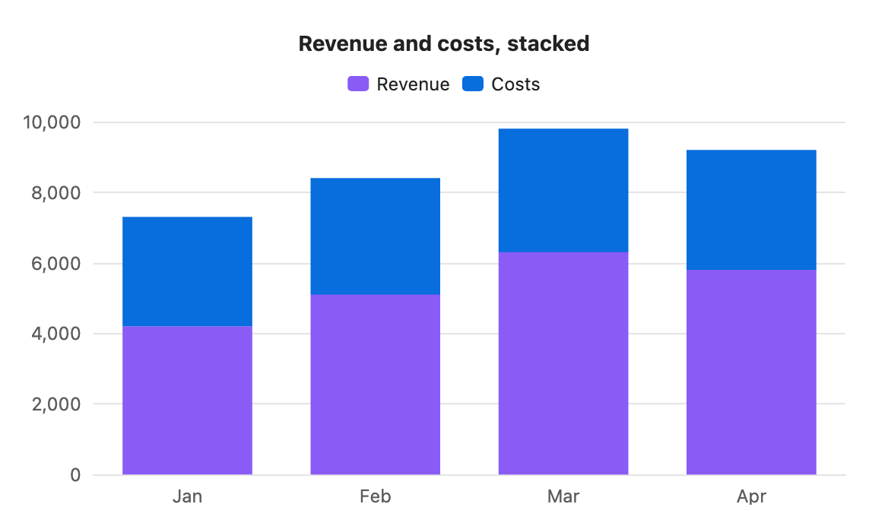
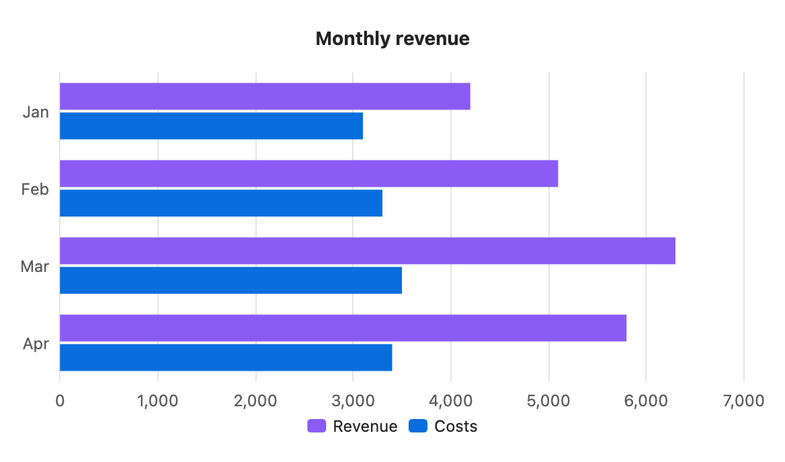
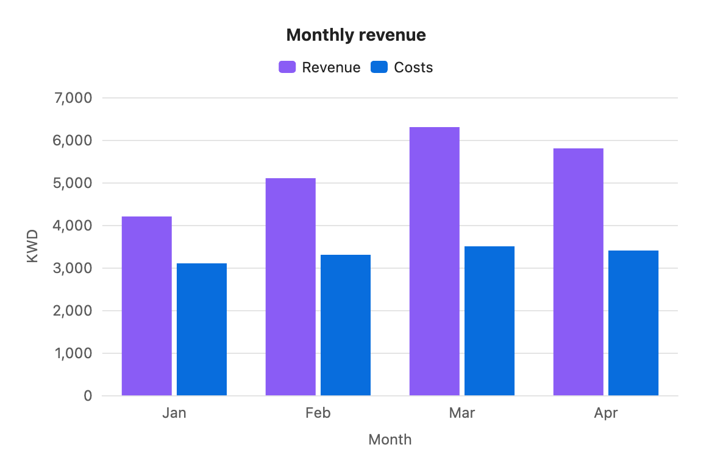

Bar chart
Bars compare values across labels. Each series gets its own bar in every group, side by side.

```s-chart
type: bar
title: Monthly revenue
---
| Month | Revenue | Costs |
| ----- | ------- | ----- |
| Jan | 4200 | 3100 |
| Feb | 5100 | 3300 |
| Mar | 6300 | 3500 |
| Apr | 5800 | 3400 |
```When to use it
Use a bar chart to compare amounts: revenue by month, tasks by project, hours by person. If the labels are points in time and you care about the trend more than each value, a line chart reads better.
Options
Every option for a bar chart, and what it does here. All of them are optional except type.
| Option | On a bar chart |
|---|---|
type: bar | Required. |
title | Text above the chart. |
x-label | Title for the label axis (under the bars, or beside them when horizontal). |
y-label | Title for the value axis. |
stacked | true stacks the series into one bar per label. |
horizontal | true draws the bars left to right, labels down the side. |
legend | top, bottom or none. Shown at the top when there are two or more series, hidden for one. |
height | Chart height in pixels, 120 to 1200. Default 300, or your setting. |
colors | One colour per series, for this chart only. |
palette | A palette from settings. Series take its colours in order. |
source, x, y | Draw from note properties instead of a table. See Charts from properties. |
The value axis always starts at zero, so bar lengths stay honest.
Stacked
Stacking puts the series on top of each other, so each bar shows the total for its label.

```s-chart
type: bar
title: Revenue and costs, stacked
stacked: true
---
| Month | Revenue | Costs |
| ----- | ------- | ----- |
| Jan | 4200 | 3100 |
| Feb | 5100 | 3300 |
| Mar | 6300 | 3500 |
| Apr | 5800 | 3400 |
```Horizontal
Horizontal bars leave room for long labels. You can combine horizontal with stacked.

```s-chart
type: bar
title: Monthly revenue
horizontal: true
legend: bottom
---
| Month | Revenue | Costs |
| ----- | ------- | ----- |
| Jan | 4200 | 3100 |
| Feb | 5100 | 3300 |
| Mar | 6300 | 3500 |
| Apr | 5800 | 3400 |
```Axis titles and height

```s-chart
type: bar
title: Monthly revenue
x-label: Month
y-label: KWD
height: 360
---
| Month | Revenue | Costs |
| ----- | ------- | ----- |
| Jan | 4200 | 3100 |
| Feb | 5100 | 3300 |
| Mar | 6300 | 3500 |
| Apr | 5800 | 3400 |
```